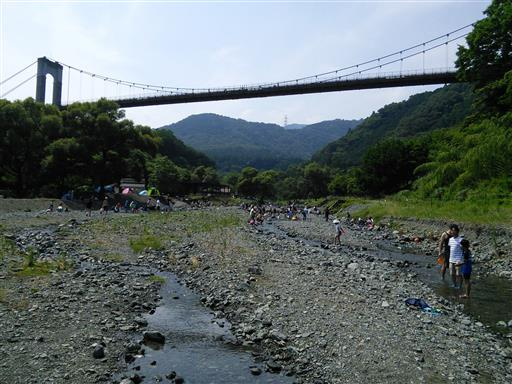
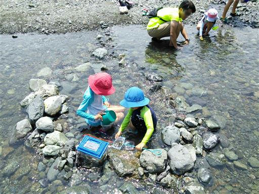
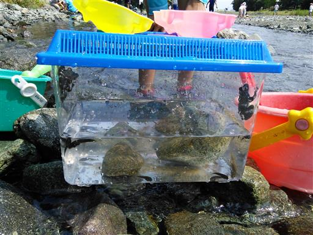
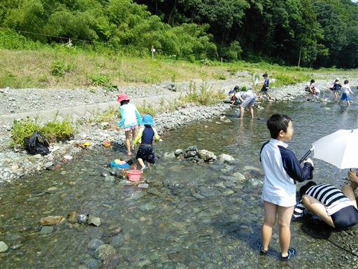
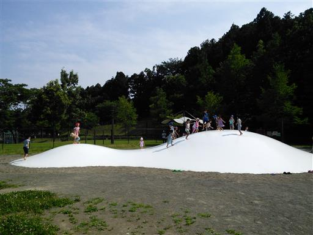

秦野戸川公園
| 日付 | 2017年7月9日（日） |
|---|---|
| メンバー | 家族（長女・6歳、長男・4歳） |
| アクセス | 車 |
本日は妻が外出のため、子供を連れてお出かけすることにする。
暑いので川に行こうと考えたが、親1人で子供2人の
面倒を見るのは少々荷が重い。
以前訪れたことのある秦野戸川公園の水無川であれば、
水量が少なく危険はほぼ無いため、
少々川遊びの醍醐味には欠けるが、再び水無川に行くことにする。
秦野戸川公園の水無川に到着。
駐車場は登山客と川遊び客ですでに一杯で、少し遠い駐車場に
車を停める羽目になった。川は多くの人で賑わっている。

魚を捕るため（？）あちらこちらに石が円形に並べられている。
その一角に腰を下ろして遊び始める。

たくさんのオタマジャクシとメダカを捕まえる。
オタマジャクシは子供たちも少しは捕まえられるようになった。
さらに今回はカエルもゲット。1匹はもらいもの、もう1匹は捕まえたものだ。

水を怖がらなくなった息子は、あちらこちら自由に歩き回っている。
この川は安全なので安心して見ていられる。

最後に公園の遊具やふわふわドームで少し遊んでから帰ることにする。

他の記録